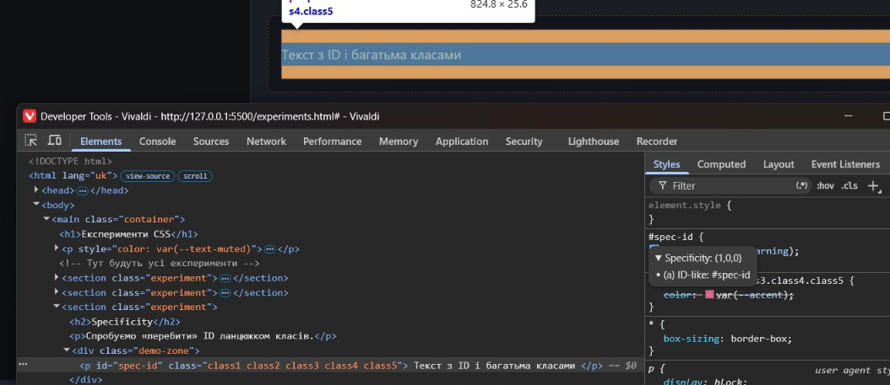
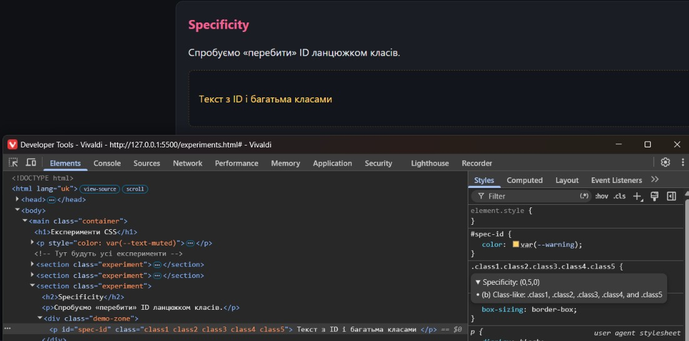

Лабораторна робота · 02
Експерименти CSS
Невеликі демонстрації Box Model, Cascade, Specificity, Inheritance, CSS Variables та повторного використання стилів.
1. Box Model
Блоки мають width: 200px, height: 100px, однакові padding і
border. У першого задано content-box, у другого — border-box.
Спостереження. У content-box padding і border збільшують
зовнішній розмір. У border-box вони входять у задані 200 × 100 px. Спільне
правило для сторінки встановлює border-box; цей приклад локально його
перевизначає, щоб показати різницю.
2. Cascade
Для одного елемента визначено однаково специфічний селектор у зовнішньому CSS двічі та в
цьому <style>. Порівняйте, яке значення перемагає.
Перемагає пізніше правило
Спостереження. Спершу перемагає друге правило у зовнішньому файлі через
порядок оголошення. Правило в <style> розташоване після зовнішнього
файлу та має таку саму специфічність, тому його рожевий колір перемагає.
3. Specificity
Порівняння селектора ID із ланцюжком із п’яти класів у DevTools.
Колір визначає селектор ID
Спостереження.


Специфічність #spec-id дорівнює (1, 0, 0), а п’ять класів мають (0, 5, 0).
ID перемагає; для звичайних компонентних стилів краще використовувати класи та помірну
специфічність.
4. Inheritance
Шрифт і базовий колір задані один раз на рівні body.
Цей параграф успадковує від body шрифт і базовий колір.
Спостереження. Перше посилання зберігає браузерний колір, а кнопка —
браузерне оформлення кнопки; лише шрифт кнопки явно успадковується через
font-family: inherit. Останнє посилання явно успадковує колір через
color: inherit.
5. CSS Variables
Змінні теми оголошені в :root; компонент може локально перевизначити їх.
Спостереження. Змінні з :root доступні нащадкам. Локальне
перевизначення впливає на компонент і його вміст, що допомагає створювати варіанти без
дублювання базового правила.
6. Повторне використання стилів
Спільний клас .demo-button задає основу, модифікатори змінюють варіант.
Спостереження. Спільний клас зменшує повтори; модифікатори задають тільки відмінності між варіантами.